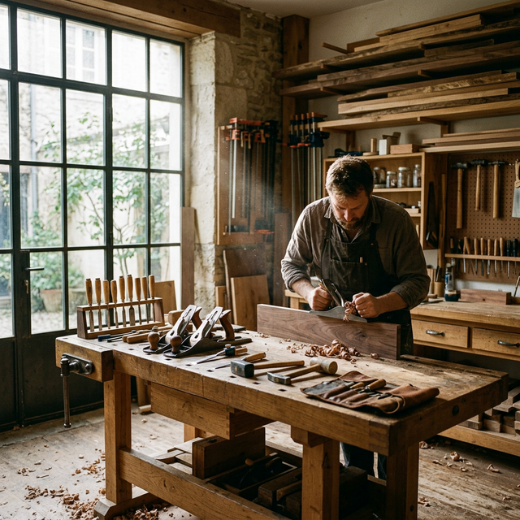

Monday
Concept sketching and grain selection
Finding the rhythm of the new collection through pencil and wood.

"I don't build furniture to fill space. I build it to hold life."
Our work starts with restraint: fewer features, better details, stronger materials. Every line should serve use, longevity, and tactile quality.
Joinery first, ornament second.
Low-VOC finish systems with easy lifetime maintenance.
Built dimensions calibrated to real spaces and circulation.

Finding the rhythm of the new collection through pencil and wood.

Dry-fit components to account for seasonal wood movement.

Final hand-sanding sequence before oil and wax treatment.
We preserve natural grain movement and avoid over-correction.
Details are judged by use, comfort, and maintenance over time.
Confident silhouettes, restrained decoration, lasting presence.
Commission a custom piece and receive process updates from sketch to delivery.
Start Your Project